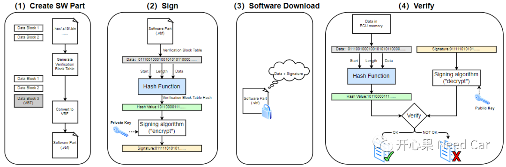
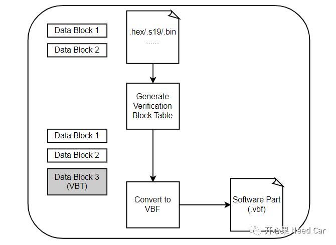
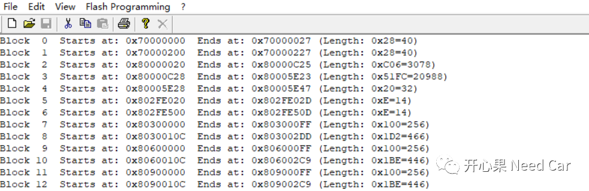
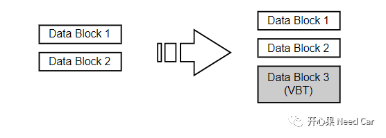
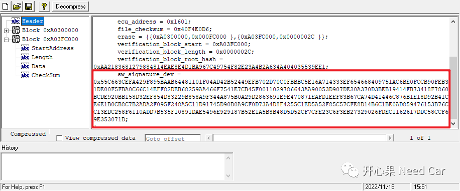
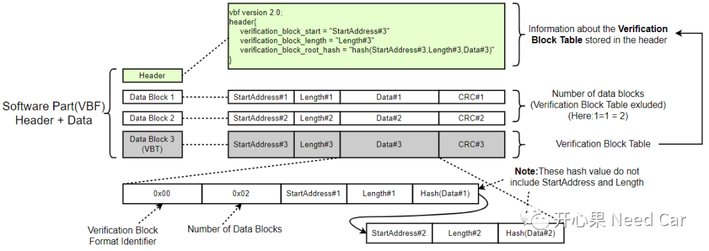
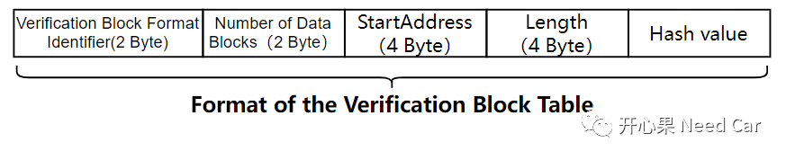
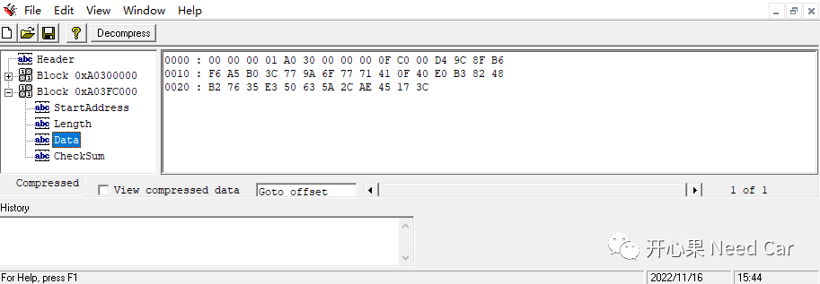
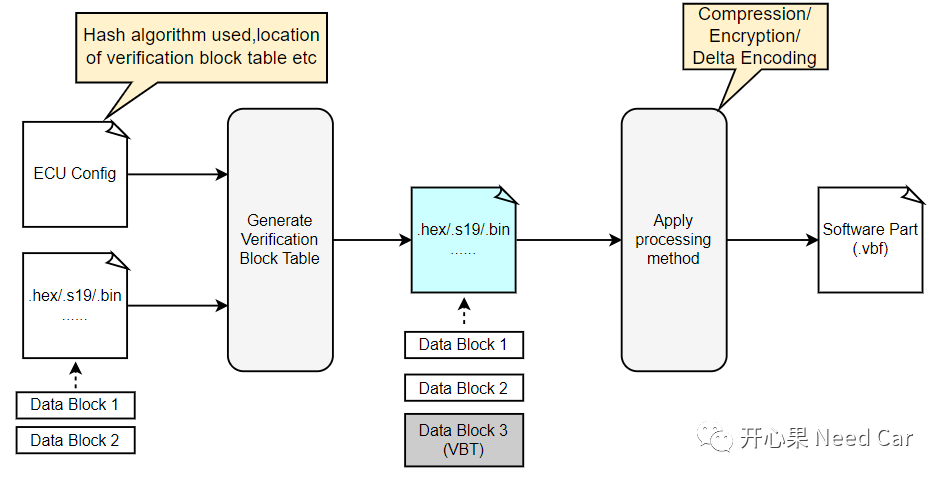

近些年，汽车新势力的强势入局，汽车行业，大有"百花齐放"的盛况。汽车行业的蓬勃发展，催生多种新技术的诞生和跨界使用，比如：软件认证功能（Software Authentication）。讨论的内容包括但不限于：1、软件Part创建 2、软件签名 3、软件下载与验证......
本系列话题讨论的几点内容如下所示：

本文讨论第一个点：软件Part创建（Create SW Part）
创建软件Part示意如下所示：

一个Software Part可以包含多个Data Blocks。这里解释一下Software Part和Data Blocks。
- Software Part：软件块，比如：Application程序块、标定块（Calibration）等。
- Data Blocks：软件被编译器编译后，并不连续，而是分段的。
可以用HexView打开编译后的可执行文件（本文：.hex）,打开一个Application Part，对应的部分Data blocks如下所示：

提示：实际的工程中，可能会将Block间的gap用指定填充值（eg：padding value = 0x00）进行填充，形成一个大的Block，以便于减少hash的计算。为了验证下载的数据，需要清楚ECU每个Data Block在内存中的起始地址、长度、CRC等信息。对于需要认证的软件，Software Part除了Data block信息外，还会附加一个VBT（Verification Block Table），置于Data block后面。一般来说，VBT会专门分配一个block，且Start Address确定。示意如下所示：
VBT里面放置的是什么呢？答：VBT就像一个清单列表（manifest），存储着Software Part里的每个Data Block信息，这些信息包括：起始地址、长度、Hash值等。首先，对VBT签名（sign），对应的信息（start address、 length、 hash value）存储在"Header"中，其中root hash value是指对VBT的起始地址、长度、数据的计算结果。root hash value是程序最先比对的一个对象，如果root hash value验证不过，则之后的Data block的hash值不再比对。注意，root hash的签名信息会通过上位机发送给ECU，常规做法：通过诊断Routine Control service (0x31) 服务将签名信息下发给ECU，ECU使用已经存储的Public Key计算VBT对应的root hash value。签名信息包含在"Header"部分，如下所示：

注意：签名信息又分为产品签和开发签。开发签主要在开发阶段使用，产品签主要用于产线。
VBT格式如下所示：

- 当VBT刷写进ECU Memory以后，会调用HSM接口，根据VBT的StartAddress、Length、Data计算root hash（这里记为root_hash_1）。注意，此处的VBT Block和Data Block已通过Transfer Data service (0x36) 存储到ECU的指定 Memory；
- 当ECU收到上位机发送的签名信息以后，根据签名信息再次调用HSM计算root hash（这里记为root_hash_2）；
- 如果root_hash_1 == root_hash_2，则VBT验证通过，之后进行后续的Data Block验证；否则，验证失败，即：刷写失败。
提示：
（一）VBT格式
VBT的格式如下所示：

Hash value的长度与使用的Hash算法相关，比如：使用SHA-256，则Hash value = 256 bit = 32 Byte。示例：一个Data Block，VBT的Data记录信息如下所示

解析：
这里的Format Identifier是企业规范，并不属于通用规范，比如：0x0000对应SHA-256、0x0001对应SHA-384、0x0002对应SHA-512等。此标识主要用于区分使用的SHA算法。需求中，一般会要求：在生成VBT之前，Data block数据不要压缩（Compression）、加密（Encryption）、编码处理等。这些动作需要在VBT生成之后进行，如下所示：
点击下方关注，一起聊聊Autosar/嵌入式，如果需要，联系作者进群，给你更专业的解答